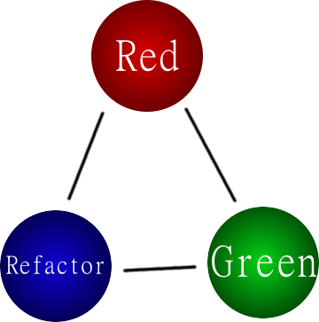

What is Test-Driven Development (TDD)?
TDD is a software development process that encourages writing a failing automated test case, then produce the minimum amount of code required to pass that test, optionally followed by refactoring code.

Why is Test-Driven Development Useful?
- Allows you to make incremental steps easily and encourages against large, sweeping changes.
- Allows us to break the negative feedback loop of increased defects and maintain a linear (as opposed to exponential) cost of change. (see: Technical Debt)
“The act of writing a unit test is more an act of design than of verification. It is also more an act of documentation than of verification. The act of writing a unit test closes a remarkable number of feedback loops, the least of which is the one pertaining to verification of function”. ~Robert C. Martin
How does Angular.JS make unit testing easy?
- Dependency Injection
- Services that would otherwise be hard-to-test globals, e.g.
$timeout, $window, $location
- Pre-mocked backends, e.g.
$httpBackend, $timeout
- Karma is a pretty nice tool. I can run 5 browsers simultaneously without much issue
What's hard about unit testing with Angular.JS?
- If best practices aren't followed, code may become increasingly hard to test. e.g.
jQuery usage outside of directives (or improperly used within directives).
- Isolated vs. non-isolated scopes can be confusing.
- Might have to expose more than necessary to test state or otherwise internal methods. Think: is it better to encapsulate this away or is it better to make it easy-to-test?